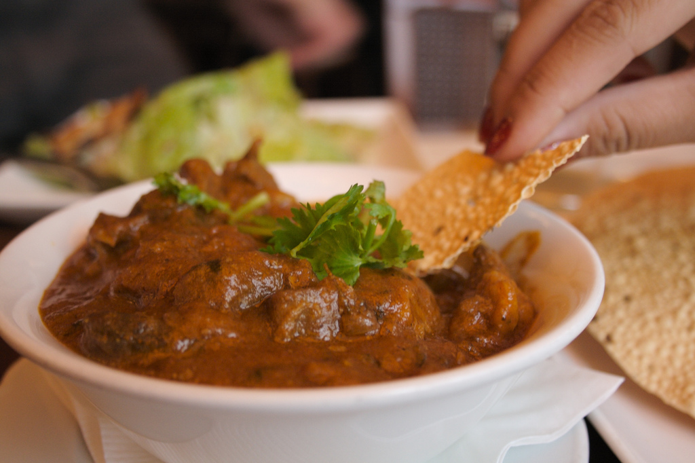

Mains
Chicken 65 $13.00
Ingredients:
- Chicken Tight (with bones) - 500 gms/ 1/2 kg
- Oil - to deep fry
- Curry leaves - 2 springs (20 leaves)
To Marinate:

- Red chilli powder - 1 tsp
- Coriander powder - 2 tsp
- Kashmiri red chilli powder - 3 tsp (gives colour)
- Garam masala powder - 1 tsp
- Pepper powder - 1/2 tsp
- Curry leaves - 20 leaves finely chopped
- Cornflour - 1 tbsp
- All purpose flour/ maida - 1 tbsp
- Vinegar - 1/2 tbsp (recommended)
- Salt- 1 tsp
Method:
- Wash chicken in running water 3-4 times. Transfer to a colander to drip away all excess water, let it rest for 10 mins.
- In a bowl combine all the ingredients given under to marinate and mix well add the chicken pieces and mix well so that the chicken is well coated with all the spices.
- Cover and place in a refrigerator overnight/ for minimum 1 hour.
- 30 minutes before frying take the chicken marination out and let it come to room temperature.
- In a wok/ kadai heat oil. First add the curry leaves and once it splutters, remove with a slotted spoon from the hot oil. This enhances the flavor of the oil. Do not skip this step.
- Now start adding the chicken pieces in medium heat oil and fry for 2 minutes each side until well cooked. Using a slotted spoon remove the chicken pieces and drain in a kitchen towel.
- Once the oil drains, serve hot along with onion rings and lemon wedges.
Lamb Rogan Josh $14.00
Ingredients:
- 250 gm lamb chops or stewing lamb
- 3 Tbsp vegetable oil
- 2 pieces cassia bark or cinnamon stick
- 2 bay leaves
- 2 green cardamoms
- 2 onions, finely chopped
- 2 garlic cloves, finely chopped
- 1 Tbsp butter
- 1/4 tsp turmeric
- 1/4 tsp chilli powder
- 1/2 tsp ground cumin
- 1/2 tsp ground coriander
- 1 tsp tomato puree
- 1/4 tsp salt
- A pinch of garam masala
- 1 tsp lemon juice
Method:
- Heat the oil in a heavy based pan.
- Tip in the cassia bark, bay leaves and cardamoms. When they sizzle (make sure they don't burn, if they do, discard whole spices and repeat the process) add the garlic and the onions followed by the butter and fry till the onions are nicely caramelized.
- This will take about 10 minutes. It may be longer if you're frying more onions.
- Add the turmeric, chilli powder, cumin and coriander and mix for about 30 seconds. Stir in the tomato puree and mix.
- Add the lamb and fry for 5 to 7 minutes till it changes colour or turns opaque.
- Pour 400ml of just boiled water, cover and simmer for 40 minutes till the meat is tender.
- Remove the lid and add the salt and sprinkle the garam masala. Stir in the lemon juice.
- Just before serving you could garnish with washed and chopped coriander leaves (if you're freezing or serving the next day, don't add the leaves).
- If you want to make the sauce thicker, cook the curry further.
- If you want more sauce, add an extra 200ml of wa//ter.
- The oil should rise to the top of the saucepan, which means the curry is ready.
Butter Chicken $13.00
First marination
- 450 grams to ½ kg Chicken (or 1 lb.)
- ¾ tbsp. Lemon juice
- ¼ tsp. Salt
- ½ tsp. Red chili powder
Second marination
- ¾ tsp. Kasuri Methi
- ⅛ tsp. Turmeric
- ½ tsp. Garam Masala powder
- ¾ tbsp. oil
- 1 tbsp. Ginger Garlic paste
- ½ cup thick curd/hung yogurt (or Greek yogurt)
Makhani masala (gravy)
- 2 tablespoons butter
- 1 tsp. Ginger Garlic paste
- One thin 2 inch cinnamon stick
- 2 green cardamoms
- 2 cloves
- Generous pinch of methi powder (fenugreek seeds powder)(optional)
- 1 to 2 green chillies slit
- 4 large tomatoes (pureed in the blender and filtered to remove skin and seeds) or tinned puree as needed
- 1 tsp red chili powder (adjust to suit your taste and color)
- 8 cashew nuts or blanched soaked almonds
- ½ tsp. Garam Masala powder
- ½ tbsp. kasuri methi
- ¼ tbsp. sugar
- 80 to 100 ml chilled cream
- Coriander leaves for garnishing
Method:
- Wash chicken under running water and pat dry. Marinate with lemon juice, chili powder and salt for 20 minutes
- Marinate chicken from step 1 with yogurt, kasuri methi, oil, turmeric, ginger garlic paste, and garam masala powder. Refrigerate for at least 3 to 4 hours, overnight works best.
- Grill the chicken in an oven or stove top. For stove top method, Add one tsp. butter and add the marinade. Fry on high flame till all the moisture evaporates. Keep stirring constantly to prevent burning. Cook till it is cooked. Transfer this to a plate and set aside.
- Heat a pan with butter, add dry spices and fry for a min or two. Add ginger garlic paste, green chilies and fry till it turns fragrant.
- To the pan, add the tomato puree, red chili powder and salt. Mix and cook until the tomato puree becomes thick and begins to leave the sides of the pan.
- Pour 1 cup water and add methi powder, almond paste or almond milk. Adjust the water to suit your desired consistency.
- Bring the mix to a boil and simmer for 3 to 5 minutes. Add kasuri methi and garam masala now, or add at a later step for the best aroma
- Add chicken and simmer for about 5 to 7 minutes till it becomes soft and tender.
- Add garam masala, kasuri methi. Stir and simmer for about 2 to 3 minutes. Pour chilled cream and switch off the stove.
- Garnish punjabi murgh makhani with coriander leaves and extra cream if desired
Chicken Tandoori $14.00
Ingredients
- 8 large Chicken pieces with skin (2 pieces breast, 2 pieces of thighs, a couple of wings)
- Oil, to baste

For the marinade:
- 4 tsp red chilli paste
- 3 Tbsp ginger and garlic paste
- 2 tsp chaat masala
- 1 1/2 tsp of the masala
- 1 Tbsp oil
- 3 Tbsp curd
- Salt, to taste
- Juice of 1/2 lemon
For the tandoori masala:
- 2 sticks cinnamon
- 1 Tbsp black peppercorns
- 5 green cardamom
- 3 brown cardamom
- 2 tsp coriander seeds
- 2 tsp cumin seeds
- 3 cloves
- 1 bay leaf
- 3/4 tsp turmeric
Method:
- Make small gashes in the chicken pieces for the marinade to coat it nicely.
- In a bowl add ginger and garlic paste, red chilli paste, chaat masala, tandoori masala, oil, curd, salt and lemon juice. Mix it well.
- Rub the marinade on the chicken pieces, over the skin and underneath it. Marinate the chicken pieces for 30 minutes.
- Char grill the chicken pieces on a griller or tandoor. Baste with oil at regular intervals.
- Serve with lemon wedges and onion rings.
- In a pan dry roast cinnamon, peppercorns, green cardamom, brown cardamom, coriander seeds, cumin seeds, cloves, bay leaf and turmeric powder.
- In a mortar and pestle grind the dry roasted spices into a fine powder.
- Masala is ready.
For the marinade:
For the tandoori masala:
Tip: To make sure the chicken does not stick to the grill, glaze the grill with some oil. If you are making it in an oven, the temperature needs to be around 250-300 degrees C.
Plain Rice (2 Servings) $5.00
Plain white rice cooked to perfection (Basmati) (No Recipe)